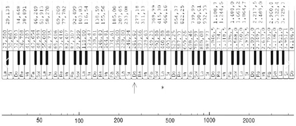
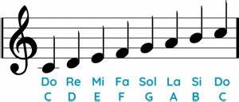
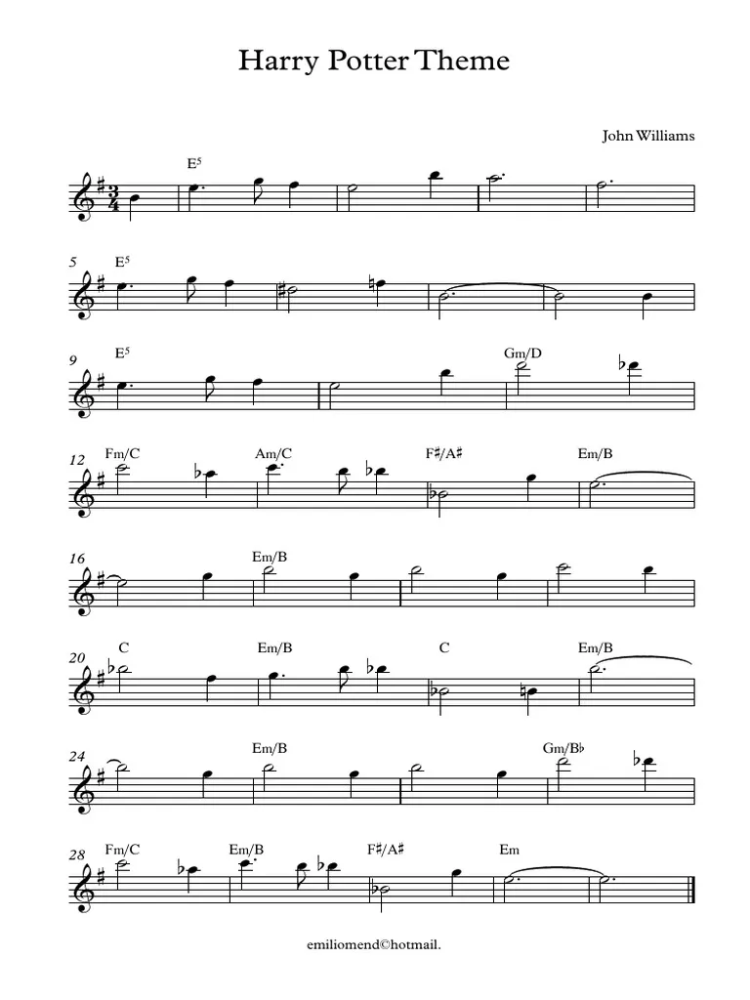

PROJECTE MÚSICA
La instrucció més important per fer música amb Arduino és "tone" i té 3 arguments (3r optatiu):
- El primer argument és 'el pin', la posició de l'Arduino en la qual connecto: Pin 8 o Pin 4
- El segon argument és 'la freqüència' i s'expressa en Herz
- El tercer argument és optatiu i és 'el temps de durada'
Escala tone d'Arduino

----------------------------------------------
Escala de notes internacionals

----------------------------------------------
Patitura Harry Potter

Codi referencial fet a classe
//sketch 07-03
void setup()
{
tone(4, 500);
}
void loop() {}
#define NOTE_B4 493.883
#define NOTE_E5 659.255
#define NOTE_G5 783.991
#define NOTE_#F5 739.989
#define NOTE_B5 987.767
#define NOTE_A5 880.000
#define NOTE_#D5 622.254
#define NOTE_F5 698.456
#define NOTE_D6 1174.66
#define NOTE_#C6 1108.73
#define NOTE_C6 1046.50
int harrypotter[]{
NOTE_B4, NOTE_E5, NOTE_G5, NOTE_#F5, NOTE_E5, NOTE_B5, NOTE_A5, NOTE_#F5,
NOTE_E5, NOTE_G5, NOTE_#F5, NOTE_#D5, NOTE_F5, NOTE_B4, NOTE_B4, NOTE_B4,
NOTE_E5, NOTE_G5, NOTE_#F5, NOTE_E5, NOTE_B5, NOTE_D6, NOTE_#C6,
NOTE_C6
}
int durades[]{
100, 150, 50, 100, 200, 100, 300, 300,
150, 50, 100, 200, 100, 300, 200, 100,
150, 50, 100, 200, 100, 200, 100,
200,
}
void setup(){
}
void loop() {
int numNotes= sizeof(harrypotter)/sizeof(harrypotter[0]),
//Calculem el número de notes dividint el número de bytes totals de la canço que ho calcula la funció "sizeof" entre el número
de bytes de una de les notes (en aquest cas la primera). En aquest exemple tenim 5 notes i cada nota ocuparà un número enter
que es igual a 2 bytes en arduino. Per tant harry potter ocupa 10 bytes que dividit entre el tamany de la primera nota que son
2 bytes dona 5 notes musicals. El número 5 el guardem a la variable numNotes.
// L'avantatge que té aquest codi és que sempre contarà les notes i puc canviar quan vulgi la cançó
}
Després vam transformar el codi base en un codi funcional per a Arduino IDE
// Definimos las frecuencias de las notas (en Hz)
double B4 = 493.883;
double E5 = 659.255;
double G5 = 783.991;
double XF5 = 739.989;
double B5 = 987.767;
double A5 = 880.000;
double XD5 = 622.254;
double F5 = 698.456;
double D6 = 1174.66;
double XC6 = 1108.73;
double C6 = 1046.50;
double P = 0; // pausa
// Duraciones de las notas (en milisegundos)
int bp = 300; // blanca amb punt
int b = 200; // blanca
int np = 150; // negra amb punt
int n = 100; // negra
int c = 50; // corchea
int s = 25; // semicorchea
// Melodía (frecuencias)
double potter[] = {
B4, E5, G5, XF5, E5, B5, A5, XF5,
E5, G5, XF5, XD5, F5, B4, B4, B4,
E5, G5, XF5, E5, B5, D6, XC6,
C6
};
// Duración de cada nota correspondiente
int duracioNota[] = {
n, np, c, n, b, n, bp, bp,
np, c, n, b, n, bp, b, n,
np, c, n, b, n, b, n,
b,
};
void setup() {
// Nada en setup
}
void loop() {
int numNotas = sizeof(potter) / sizeof(potter[0]);
for (int i = 0; i < numNotas; i++) {
if (potter[i] > 0) {
tone(8, potter[i]); //
}
delay(duracioNota[i]);
noTone(8);
delay(50); // pequeña pausa entre notas
}
delay(2000); // espera antes de repetir la melodía
}